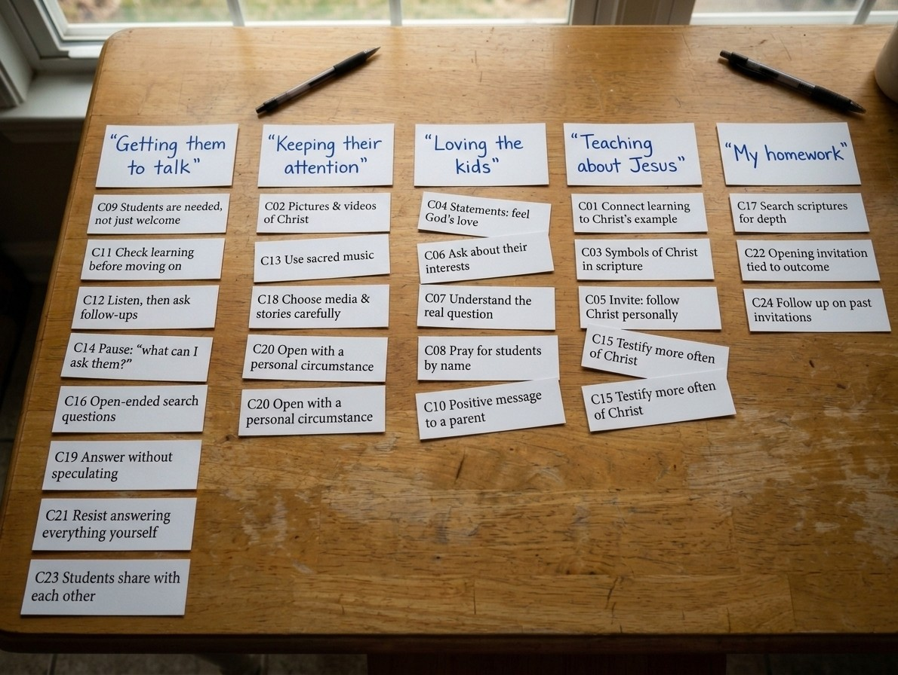
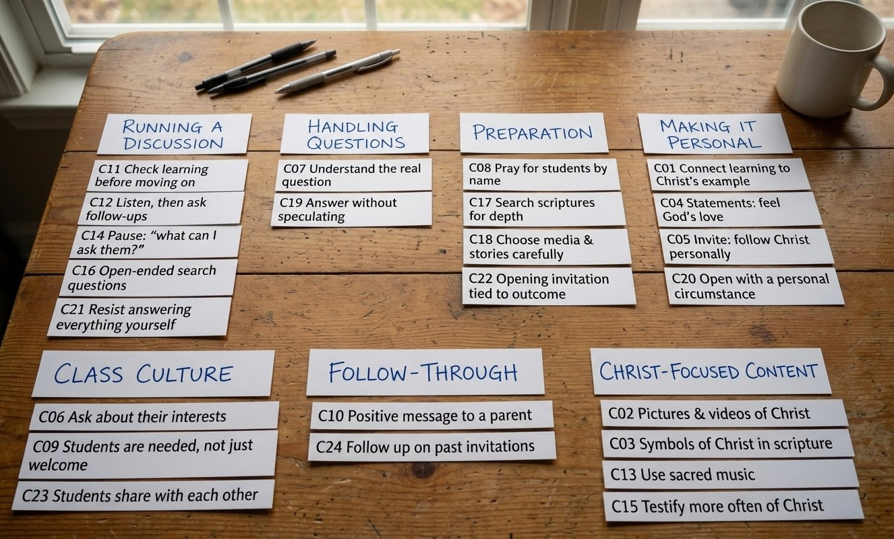
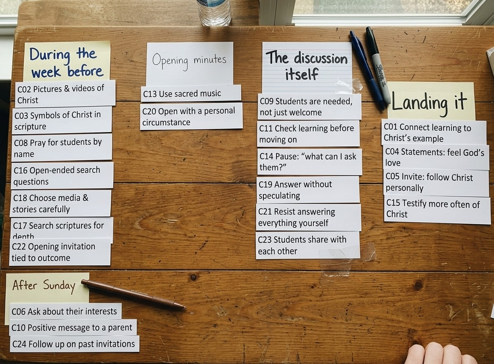

CS 356 Companion · Study 1 of 3 · Turn-in 1
Open card sort: two turn-ins, graded
An open card sort puts your content — one card per item — in front of people from your real population, who group the cards however makes sense to them and then name each group in their own words. The assignment: run one with 8–10 participants on your project’s content, and turn in a single PDF with the participants’ names, pictures of every finished sort, a page of analysis (trends and isolated incidents), a page of categories and labels justified from the results, and half a page on what you’re choosing to ignore. This is Turn-in 1, graded on the 60-point Study Report Rubric — Methods 15, Results & Analysis 20, Design Decisions 25 — the same rubric every user study in the chain is graded on (the prototypes have their own). The grader’s notes below quote the rubric’s band language as it is applied.
Report A — 60/60
The white pages are the report itself, exactly as it would leave Word as a PDF — written in the voice of a strong CS undergraduate. Everything in red is the grader, not the report.
FICTITIOUS DATA Every participant is an invented member of an invented ward (meet the ward).
Open Card Sort — Study Report
CS 356 · Project 1 · Principles of Teaching redesign · November 2026
1. Who was in the study
| Sort | Participant | Calling | Notes |
|---|---|---|---|
| S1 | Margie Ostler (P01) | Primary, 10–11s | 30 years in the ward; teaches her own grandchild |
| S2 | Trent Larkin (P02) | Sunday School, adult class | 11 years; reads ahead on the manual |
| S3 | Whitney Kartchner (P04) | Young Women, 14–15s | 4 years; preps between nursing shifts |
| S4 | Curtis Openshaw (P05) | Sunday School, 16–18s | 38 years; knows the manual better than anyone we could find |
| S5 | Jenae Rowley (P06) | Relief Society instructor | 6 years; the only participant who outlines lessons in a document |
| S6 | Kade & Rylee Beckstrand (P07 + P08) | Primary, 7-year-olds (team) | 3 years; sorted together as a pair, talking it out |
| S7 | Lonnie Tolman (P13) | Primary, 4-year-olds | 41 years; retired fifth-grade teacher — the only participant with classroom training |
| S8 | Cami Sprague (P15) | Primary, 5-year-olds | 8 months; the newest teacher in the ward |
Method: open sorts with physical cards, no starter categories. Each person grouped the 24 cards however they wanted and named each group on a sticky note. We photographed every sort, typed the labels exactly as written, and noted what people said when they hesitated. One deviation to flag: Spencer says 30–60 cards; we used 24, to fit the twenty-ish minutes people had between meetings while still sampling all five manual sections (5/5/5/5/4). The cost is thinner patterns; we judged coverage worth it for a first pass.
2. Pictures of the resulting sorts
S1, S2, and S5 are our photos as taken; the other five we transcribed into diagrams. Group names are verbatim; Appendix A has each card’s exact wording.

Fastest sort (11 minutes), no hesitations. She put C19 (answer without speculating) in “Getting them to talk”: “That one’s for when they do talk.” INVENTED QUOTE

Most piles (seven); the only one to give follow-through its own pile. Held the music card ten seconds (see analysis).
“Getting the girls talking”
- C09 Students are needed, not just welcome
- C11 Check learning before moving on
- C14 Pause: “what can I ask them?”
- C16 Open-ended search questions
- C21 Resist answering everything yourself
- C23 Students share with each other
“When I don’t know what to say”
- C07 Understand the real question
- C12 Listen, then ask follow-ups
- C19 Answer without speculating
“Knowing them”
- C06 Ask about their interests
- C08 Pray for students by name
- C10 Positive message to a parent
“About the Savior”
- C01 Connect learning to Christ’s example
- C02 Pictures & videos of Christ
- C03 Symbols of Christ in scripture
- C04 Statements: feel God’s love
- C05 Invite: follow Christ personally
- C15 Testify more often of Christ
“Openers”
- C13 Use sacred music
- C20 Open with a personal circumstance
- C22 Opening invitation tied to outcome
“Prep I should do”
- C17 Search scriptures for depth
- C18 Choose media & stories carefully
- C24 Follow up on past invitations
“When I don’t know what to say” is a pile for things that happen to her mid-lesson. She held C24 a while — “This one’s really for next week.” INVENTED QUOTE — then put it in prep.
“Center on Christ”
- C01 Connect learning to Christ’s example
- C02 Pictures & videos of Christ
- C03 Symbols of Christ in scripture
- C04 Statements: feel God’s love
- C05 Invite: follow Christ personally
- C15 Testify more often of Christ
“Love the students”
- C06 Ask about their interests
- C07 Understand the real question
- C08 Pray for students by name
- C09 Students are needed, not just welcome
- C10 Positive message to a parent
“By the Spirit”
- C13 Use sacred music
- C14 Pause: “what can I ask them?”
“Teach the doctrine”
- C16 Open-ended search questions
- C17 Search scriptures for depth
- C18 Choose media & stories carefully
- C19 Answer without speculating
“Get them learning”
- C11 Check learning before moving on
- C12 Listen, then ask follow-ups
- C20 Open with a personal circumstance
- C21 Resist answering everything yourself
- C22 Opening invitation tied to outcome
- C23 Students share with each other
- C24 Follow up on past invitations
The only one who tried to match the manual on purpose (see analysis). His Love pile matched it exactly; his Spirit pile stalled at two cards.

“I sorted by when it happens — is that allowed?” INVENTED QUOTE (We said yes.) The only sequential sort, with the biggest single pile: seven cards in “During the week before.”
“Keeping seven-year-olds alive”
- C02 Pictures & videos of Christ
- C06 Ask about their interests
- C13 Use sacred music
- C20 Open with a personal circumstance
“Getting answers out of them”
- C11 Check learning before moving on
- C12 Listen, then ask follow-ups
- C14 Pause: “what can I ask them?”
- C16 Open-ended search questions
- C21 Resist answering everything yourself
- C23 Students share with each other
“Loving them”
- C04 Statements: feel God’s love
- C07 Understand the real question
- C08 Pray for students by name
- C09 Students are needed, not just welcome
- C10 Positive message to a parent
“Jesus cards”
- C01 Connect learning to Christ’s example
- C03 Symbols of Christ in scripture
- C05 Invite: follow Christ personally
- C15 Testify more often of Christ
“Grown-up homework”
- C17 Search scriptures for depth
- C18 Choose media & stories carefully
- C19 Answer without speculating
- C22 Opening invitation tied to outcome
- C24 Follow up on past invitations
The pair sort; the arguing was our best data (C21, see analysis). C19 went in Kade’s “Grown-up homework”: “That one’s for Trent’s class.” INVENTED QUOTE
“Engagement”
- C02 Pictures & videos of Christ
- C09 Students are needed, not just welcome
- C13 Use sacred music
- C20 Open with a personal circumstance
- C23 Students share with each other
“Questioning strategies”
- C07 Understand the real question
- C11 Check learning before moving on
- C12 Listen, then ask follow-ups
- C14 Pause: “what can I ask them?”
- C16 Open-ended search questions
- C19 Answer without speculating
- C21 Resist answering everything yourself
“Relationships”
- C04 Statements: feel God’s love
- C06 Ask about their interests
- C08 Pray for students by name
- C10 Positive message to a parent
“The content”
- C01 Connect learning to Christ’s example
- C03 Symbols of Christ in scripture
- C05 Invite: follow Christ personally
- C15 Testify more often of Christ
- C17 Search scriptures for depth
“Planning”
- C18 Choose media & stories carefully
- C22 Opening invitation tied to outcome
- C24 Follow up on past invitations
The only professional-vocabulary labels in the study — a retired schoolteacher’s workshop words (see analysis).
“I think I already do this”
- C02 Pictures & videos of Christ
- C04 Statements: feel God’s love
- C06 Ask about their interests
- C09 Students are needed, not just welcome
“I want to try this”
- C11 Check learning before moving on
- C12 Listen, then ask follow-ups
- C13 Use sacred music
- C20 Open with a personal circumstance
- C22 Opening invitation tied to outcome
- C23 Students share with each other
“I should do this but don’t”
- C01 Connect learning to Christ’s example
- C05 Invite: follow Christ personally
- C08 Pray for students by name
- C10 Positive message to a parent
- C15 Testify more often of Christ
- C17 Search scriptures for depth
- C21 Resist answering everything yourself
“I don’t know what this means”
- C03 Symbols of Christ in scripture
- C07 Understand the real question
- C14 Pause: “what can I ask them?”
- C16 Open-ended search questions
- C18 Choose media & stories carefully
- C19 Answer without speculating
- C24 Follow up on past invitations
Slowest sort (24 minutes) and the only one with no content categories — every pile is about her relationship to the card.
FICTITIOUS DATA Computed from the eight invented sorts above; internally consistent, measured from no one.
3. Analysis: trends and isolated incidents
Trends
1. People sorted by situations, not by the manual. Five of eight sorts organized around teaching situations or tasks; one by lesson sequence, one by the sorter’s relationship to each skill. Only Curtis, who knows the manual best, tried to reproduce its five sections (“There’s a right answer to this, you know” INVENTED QUOTE) — and got two to work. His last seven cards became a catch-all: “These last ones are all just… teaching.” INVENTED QUOTE
2. The mismatch with the manual is specific, not total. Two manual sections showed up as piles in six of eight sorts each: teaching about Jesus Christ, and knowing/loving the students. Spirit, Doctrine, and Diligent Learning dissolved into situations (only one sort had a Spirit pile). Our read: sections about who match how teachers think; sections about how don’t.
3. Strong pairs. A co-occurrence tally found three clusters that basically never separate: C01+C05 (8 of 8 sorts; C15 joins them in 7); the discussion cards C11, C12, C14, C21 (pairwise 6–7 of 8); and C08+C10 (6 of 8). These stay together.
4. Splitter cards — and two different kinds. Seven cards landed in four or more kinds of pile; C19 (“answer without speculating”) was worst at five. But C13 (sacred music) and C20 (open with a personal circumstance) are the case we kept coming back to: they shared a pile in six of eight sorts while the pile’s meaning changed around them — “Keeping their attention” (S1), “Openers” (S3), “By the Spirit” (S4), “Opening minutes” (S5). People are answering two questions at once — what problem does this solve and when in the lesson does it happen — so these cards must be findable both ways.
5. Vocabulary. Labels were plain and situational: talk, attention, ready, Sunday, kids. Nobody wrote “principle,” “doctrine,” or “diligent.” The one exception, Lonnie’s “Questioning strategies” and “Engagement,” she disowned herself: “Twenty years of faculty meetings, that’s what those words are.” INVENTED QUOTE
Isolated incidents
- Trent held the music card ten seconds — “We never sing in my class. It still belongs somewhere, doesn’t it?” INVENTED QUOTE Real content can be homeless in one teacher’s practice.
- Two sorters independently made a pile for hard moments (“Handling questions,” “When I don’t know what to say”), and our worst splitter, C19, is that kind of card. Two of eight isn’t a category, but we noted it.
- Cami, eight months into her first calling, put seven of 24 cards in “I don’t know what this means” — “Is search question a church word or a real word?” INVENTED QUOTE
- Kade wanted “resist answering everything yourself” filed as grown-up theory; Rylee overruled him from experience — “If you don’t answer a seven-year-old, they’ll answer themselves, and you will not like it.” INVENTED QUOTE
4. The categories and labels we ended up with
FICTITIOUS DATA
Five categories, labeled in participants’ own words. At this size Spencer advises eyeballing the standardized results rather than computing a similarity matrix; the patterns were loud enough to agree (Appendix B).
| Category (working label) | Support | Why |
|---|---|---|
| Getting people to talk | 6 of 8 sorts | Most consistent pile in the study; label from Margie’s and Whitney’s wording. Keeps the discussion cluster together. |
| Knowing and loving the people you teach | 6 of 8 | The manual’s Love section survived real sorters under some name in every scheme-forming sort. |
| Teaching about Jesus Christ | 6 of 8 | The other surviving section. Topical, not situational — but that’s how people think about these cards (C01+C05 in 8/8). |
| Getting ready before Sunday | 6 of 8 | “My homework,” “Prep I should do,” “Grown-up homework” — different words, same pile. |
| Keeping their attention | 3 of 8 | Only three sorts — but all three are Primary teachers, and half this ward’s teachers teach children. Kept for who needs it, not the raw count. |
One more decision that is not a category: the lesson moment. Jenae’s sort, Whitney’s “Openers,” and the C13/C20/C22 splitters all say when in the lesson is a second way teachers reach for a skill, cutting across all five categories. So it becomes an attribute on every skill (opening / during / closing / after), not a sixth box — a skill can appear in several places without being filed twice. And because Cami couldn’t parse 7 of the 24 official names, category labels use only participants’ words; official skill names appear one level down, with context.
5. What we’re ignoring — for now, maybe forever
- Cami’s whole scheme (“already do / want to try / don’t understand”). A real mental model, but of her relationship to the skills — not shared navigation. Maybe personalization someday.
- A “hard moments” category. Two sorts plus the C19 splitter isn’t enough; the tree test gets the question.
- After-class follow-through. One pile, and C24 wandered. The moment attribute’s “after” may cover it.
- Lonnie’s labels. “Questioning strategies” sounds better than “Getting people to talk” — and it’s exactly the language our population doesn’t use. Ignoring our most articulate labeler felt wrong and we’re pretty sure is right.
- The missing Spirit category. Our riskiest call: one sort in eight made one, so we didn’t force it. But the manual is organized around it, so the tree test must check whether people look for what they don’t sort by. If they do, we reopen this.
- Age of audience as a facet. Hinted at by three Primary sorts. Deferred.
Report A scorecard
| Methods | Full Marks | 15 |
| Results & Analysis | Full Marks | 20 |
| Design Decisions | Full Marks | 25 |
| Total | 60/60 |
Report B — 31/60
A middle-of-the-road team’s turn-in for the same assignment — their own study, run their own way. Report B is the white pages, as it left Word; the grader follows each element in red.
Card Sort Assignment
CS 356
1. Participants
For our card sort we used five people from our ward: Margie, Curtis, Kade, Rylee, and Cami. We were trying for more but it was a busy week for everyone. Margie and Curtis each did their sort on their own, and to save time the last three (Kade, Rylee, and Cami) did theirs together as a group. To help people get started we showed everyone a couple of example groups we had made up, like “Questions” and “Preparing.” Also, after Margie went first we took out three cards that she found confusing, so the later sorts used 21 cards.
2. Photos
Pictures from Margie’s and Curtis’s sorts are below. We forgot to take one of the group’s sort until after we had picked the cards up, but we wrote their groups down afterward so nothing is really missing.
FICTITIOUS DATA [Photo: Margie’s table, five groups] [Photo: Curtis’s table, five groups — blurry]
Basically Margie’s groups were about discussion, attention, love, Jesus, and homework. Curtis pretty much used the manual’s sections. The group’s groups were mostly about kids.
3. Analysis
Margie sorted really fast and made five groups, mostly about class problems. Curtis took his time and tried to use the manual’s organization and mostly could. The group (Kade, Rylee, and Cami) made groups that were mostly about kids — Kade did most of the talking and the other two mostly agreed with him. Cami said she was confused by a lot of the cards, like she didn’t know what a search question was.
Overall the main takeaway is that nobody really understands the manual’s organization and everyone thinks in terms of problems instead — all three of the group agreed about that. Also people don’t read very carefully, which shows how the younger generation just skims things. So the sorts basically prove the site should be reorganized around problems, since that’s what people want.
4. Categories and labels
Based on our study we decided to go with seven categories: Teaching Fundamentals, Spiritual Teaching, Engagement, Questions, Preparation, Love, and Misc. We feel like these cover everything and match how the manual is set up while still being about problems. We might tweak the names later to be more catchy.
5. Things we are ignoring
Honestly nothing major — the study mostly confirmed what we already expected going in.
Report B scorecard
| Methods | Developing — 5 of 8–10 recruited; primed sort, one negotiated group, deck changed mid-study | 10 |
| Results & Analysis | Developing — recap + over-claiming (capped) | 13 |
| Design Decisions | Beginning — decisions contradict the data | 8 |
| Total | 31/60 |
What separates 60 from 31
Report B’s trouble started before the first card hit the table — five recruits, a primed deck, a group sort counted as three voices — but notice where the points actually went: 5 lost on methods, 24 on the reading and the deciding. If I could get every team to internalize three habits, they would be these. Verbatim capture: photos, labels, quotes — without them your analysis is memory, and memory always agrees with you. Synthesis with calibration: patterns with counts, claims no bigger than the data, and disagreement treated as signal rather than noise. Cited decisions: “because six of eight… we will…” — including the courage to keep what the data defends and to omit what it doesn’t, even when the manual disagrees with you. The rubric’s weighting says the same thing: 15 points for running the study, 45 for what you make of it.
In this chain, Report A is binding. Its element 4 — five categories, harvested labels, the situation + moment attributes — is exactly what the 2–3 level wireframe implements next, and the tree test will inherit its open questions (does anyone look for the Spirit? do the harvested labels carry?).
The same study, somewhere else. This card sort has also been re-run, on the same 24 cards, with invented members of the Jyväskylä Finland Stake — a very different population. Before you assume any result above would travel, see what held and what moved.
Appendix A: the deck
CONSTRUCTED DECK
This instrument is real content with authored presentation:
every card is a skill quoted verbatim from the Teacher Development
Skills manual, as carried on the live site. The
selection of 24 from 53, and the C-numbers, are ours. The
skill id column is the traceability key into the
site’s skills-data.js and the manual itself.
| # | Card text (verbatim) | Manual section | Skill id |
|---|---|---|---|
| C01 | Help students connect what they are learning with how Christ exemplifies the principle. | Focus on Jesus Christ | 004.title_number1 |
| C02 | Use pictures and videos of Jesus Christ to illustrate a gospel principle. | Focus on Jesus Christ | 004.title_number2 |
| C03 | Ask questions that help students learn about Jesus Christ through symbols in the scriptures. | Focus on Jesus Christ | 006.title_number1 |
| C04 | Statements that help students know and feel the love of Heavenly Father and Jesus Christ. | Focus on Jesus Christ | 008.title_number1 |
| C05 | Invite students to look for ways to follow the example of Jesus Christ in their personal lives. | Focus on Jesus Christ | 009.title_number2 |
| C06 | Observe and ask about students’ interests. | Love Those You Teach | 012.intro2 |
| C07 | Seek to clarify and understand the real intent of students’ questions, feelings, and beliefs. | Love Those You Teach | 012.title_number3 |
| C08 | Pray and ask how you can help your students and follow the promptings from the Holy Ghost. | Love Those You Teach | 013.intro2 |
| C09 | Communicate that students are not only welcome but needed. | Love Those You Teach | 014.title_number3 |
| C10 | Send a message to a student’s parent about something positive you have noticed about their child. | Love Those You Teach | 015.title_number1 |
| C11 | Ask a question to assess learning before moving on in the lesson. | Teach By the Spirit | 018.title_number1 |
| C12 | Listen to and observe students to ask follow-up questions. | Teach By the Spirit | 018.title_number2 |
| C13 | Use sacred music. Invite students to identify lines and phrases in sacred music that connect with the truths they are learning. | Teach By the Spirit | 019.title_number2 |
| C14 | Before responding to a student’s question or comment, pause and think, “What can I ask them?” or “What can I invite them to do?” | Teach By the Spirit | 020.intro2 |
| C15 | Testify more frequently and more powerfully of Jesus Christ. | Teach By the Spirit | 021.title_number2 |
| C16 | Create open-ended search questions that help learners discover gospel doctrine and principles for themselves and do not lead students to a specific response. | Teach the Doctrine | 023.title_number1 |
| C17 | Search the scriptures and words of the prophets for deeper understanding. | Teach the Doctrine | 023.title_number2 |
| C18 | Consider assessment questions to carefully choose media, personal stories, and object lessons. | Teach the Doctrine | 025.title_number3 |
| C19 | Respond to questions in a way that avoids speculation and nondoctrinal personal ideas. | Teach the Doctrine | 026.title_number3 |
| C20 | Start a learning activity by inviting students to ponder a personal circumstance. | Teach the Doctrine | 027.title_number2 |
| C21 | Resist the tendency to respond to every comment and question and invite the class to respond. | Invite Diligent Learning | 029.title_number1 |
| C22 | Create a meaningful invitation connected to the lesson outcome to be used at the beginning of each lesson. | Invite Diligent Learning | 031.title_number2 |
| C23 | Prepare invitations for students to share with each other what they are learning. | Invite Diligent Learning | 032.title_number3 |
| C24 | Plan to follow up on invitations given in a previous class and invite learners to share their experiences living what they learned. | Invite Diligent Learning | 033.title_number1 |
Appendix B: group-name standardization
FICTITIOUS DATA How Report A folded the participants’ verbatim pile names into standardized categories for analysis. Sequence-scheme piles fold into lesson-moment buckets (the facet), not categories; Cami’s self-relevance piles are excluded from category counts and analyzed separately.
| Standardized category | Sorts | Verbatim pile names folded in |
|---|---|---|
| Getting people to talk | 6/8 | “Getting them to talk” (S1); “Running a discussion” (S2); “Getting the girls talking” (S3); “Get them learning” (S4); “Getting answers out of them” (S6); “Questioning strategies” (S7) |
| Knowing & loving the people you teach | 6/8 | “Loving the kids” (S1); “Class culture” (S2); “Knowing them” (S3); “Love the students” (S4); “Loving them” (S6); “Relationships” (S7) |
| Teaching about Jesus Christ | 6/8 | “Teaching about Jesus” (S1); “Making it personal” (S2); “Christ-focused content” (S2); “About the Savior” (S3); “Center on Christ” (S4); “Jesus cards” (S6); “The content” (S7) |
| Getting ready before Sunday | 6/8 | “My homework” (S1); “Preparation” (S2); “Prep I should do” (S3); “During the week before” (S5); “Grown-up homework” (S6); “Planning” (S7) |
| Keeping their attention | 3/8 | “Keeping their attention” (S1); “Keeping seven-year-olds alive” (S6); “Engagement” (S7) |
| Hard moments / handling questions | 2/8 | “Handling questions” (S2); “When I don’t know what to say” (S3) |
| After class / follow-through | 1/8 | “Follow-through” (S2) |
| By the Spirit | 1/8 | “By the Spirit” (S4) |
| Teach the doctrine (manual’s term) | 1/8 | “Teach the doctrine” (S4) |
| (self-relevance — Cami’s scheme) | 1/8 | “I think I already do this” (S8); “I want to try this” (S8); “I should do this but don’t” (S8); “I don’t know what this means” (S8) |
| Lesson-moment piles (opening / during / closing / after) | 2/8 | “Openers” (S3: opening); “Opening minutes” (S5: opening); “The discussion itself” (S5: during); “Landing it” (S5: closing); “After Sunday” (S5: after) |